Casa tradicional de Foios
Proyecto de reforma básica de una casa valenciana de hacia 1900 (calle Jutera): conservar lo que tiene carácter, ampliar el salón hacia el patio y resolver humedades, cubierta y carpinterías.
La casa
Planta baja alargada, con la fachada principal oblicua a la calle (oeste) y la fachada lateral al sur. De oeste a este: tres dormitorios, salón antiguo con la escalera, un segundo salón, cocina, baño y un patio con el porche y un anexo de baños y lavadero. Encima hay un salón con balcón, una terraza y la cambra.
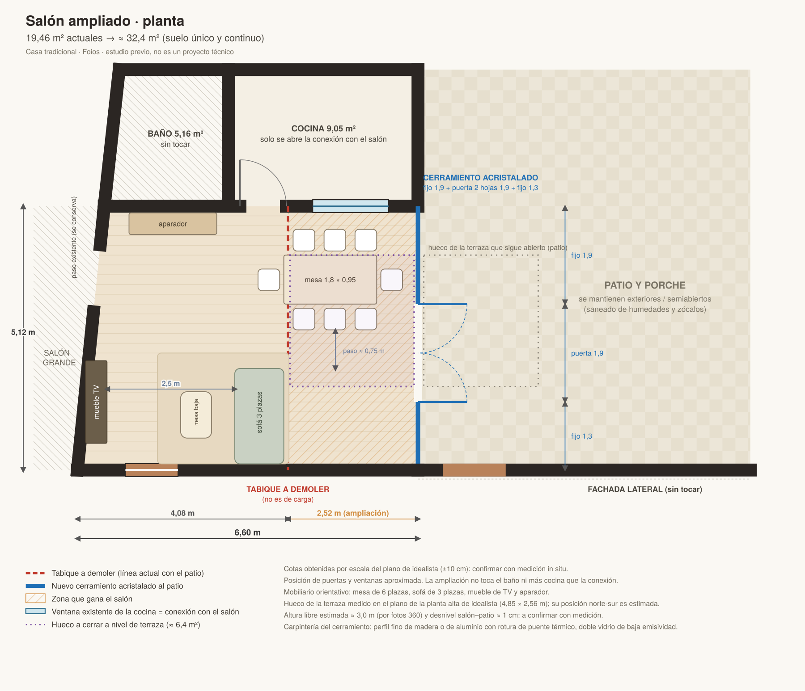
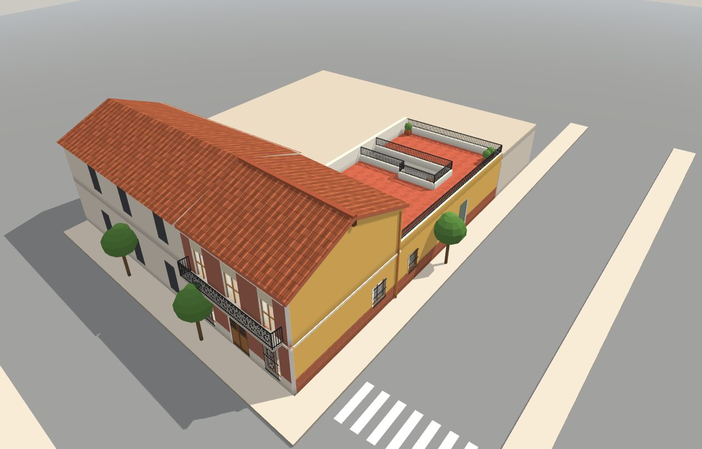
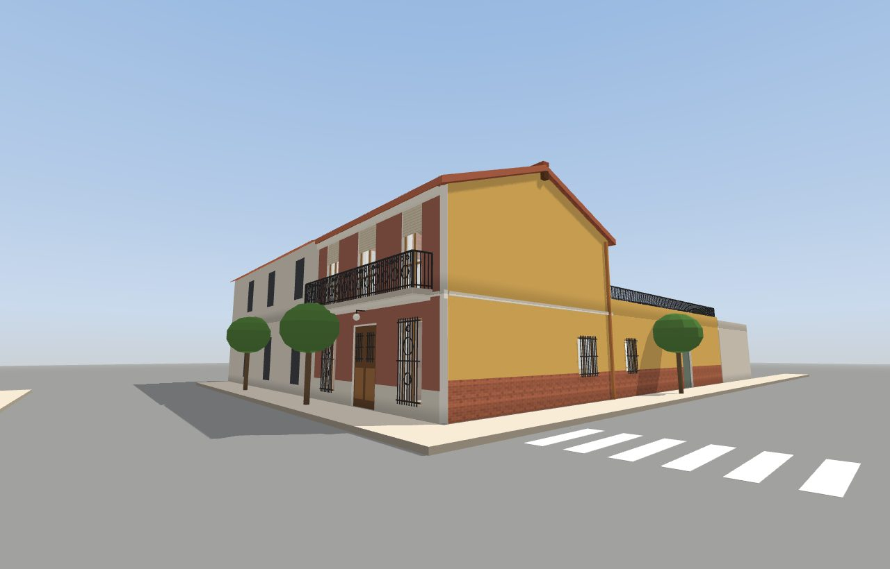
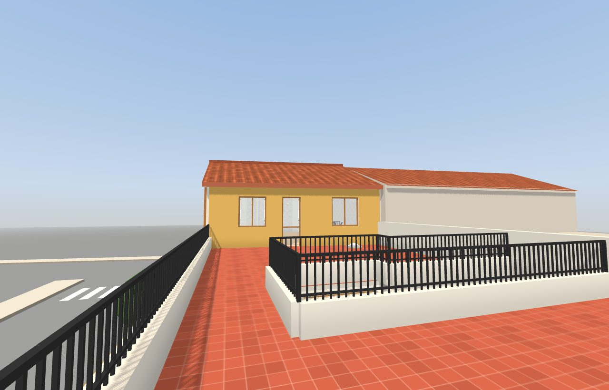
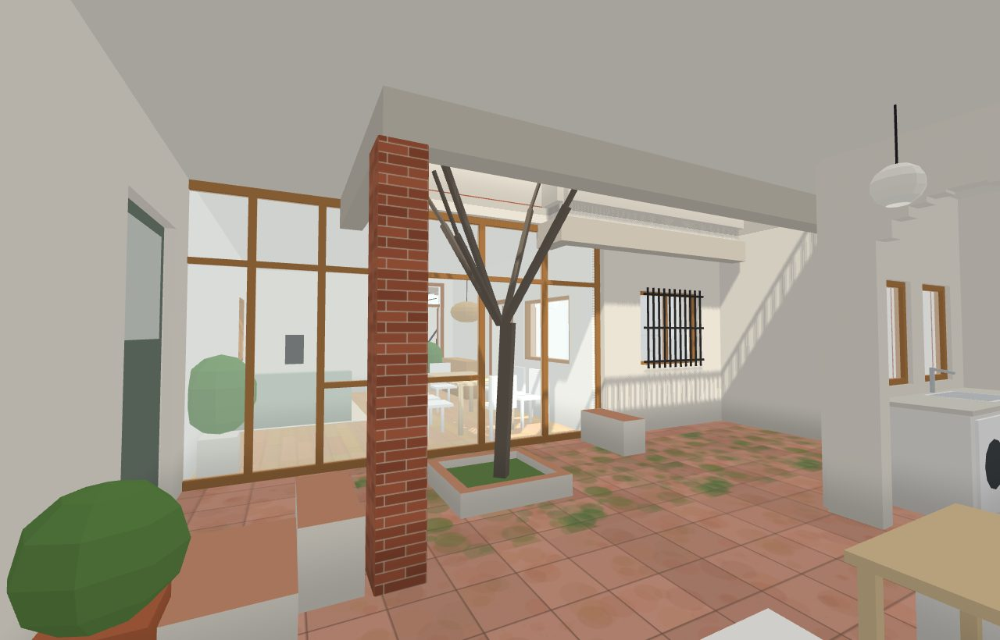
Criterios de la reforma
- Conservar el carácter: vigas de madera, bovedillas, suelos hidráulicos y carpinterías de madera recuperables.
- Humedad por capilaridad: dejar visto 1 m de ladrillo macizo desde abajo, con acabados de cal transpirables, en interiores y en el tramo que corresponda de la fachada lateral.
- Cubierta: aislar e impermeabilizar manteniendo las mismas tejas árabes recuperadas.
- Ventanas: las de aluminio se sustituyen por PVC o aluminio que se integre con la casa; las de madera (pino de mobila) se restauran con buen cristal.
- Fachadas: reparar la principal y la lateral.
- Porche y laterales: siguen siendo exterior o semiabierto; se reparan zócalos y desconchados, sin cerrarlos del todo.
Salón ampliado
El segundo salón (19,46 m²) crece hacia el patio demoliendo solo el tabique hasta el límite de la cocina. Queda en unos 32 m², con sitio para mesa de comedor, sofás y televisión. No se toca el baño y solo se abre una ventana interior de conexión con la cocina.
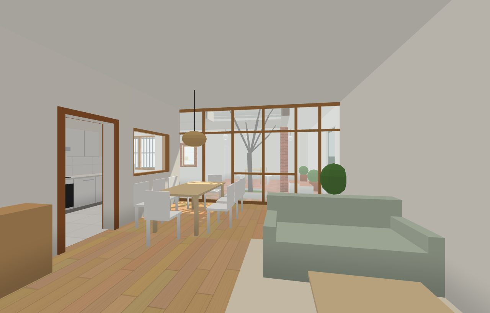

Decisiones tomadas
- Cerramiento al patio (opción A): puerta de dos hojas batientes de unos 1,9 m entre dos paños fijos (1,9 + 1,9 + 1,3 m, total ≈ 5,12 m), con vidrio de baja emisividad. Se estudian dos acabados: madera o aluminio con rotura de puente térmico.
- La cristalera actual no es original (es de una reforma posterior) y se sustituye. La cristalera original de 1900 es la del paso entre el recibidor y el salón, y se conserva.
- Suelo único: se retiran el de aspecto mármol y la baldosa del patio y se unifica todo el salón ampliado. En planta baja no vale el laminado clásico; las opciones son porcelánico efecto madera, vinilo SPC o acabado tipo hidráulico/microcemento. La franja nueva necesita excavar unos 15–20 cm para encachado, lámina, aislamiento y solera.
- Techo del hueco: la franja que se suma al salón está abierta al cielo dentro de la terraza. Se cierra con forjado opaco a nivel de terraza y techo continuo, no con cubierta de vidrio.
Baño reformado
Conserva su superficie (5,16 m²) y no tiene ventana, porque su pared da a la medianera. Se resuelve así:
- Distribución: ducha de obra a ras de suelo a lo ancho del lado norte, con sumidero lineal y un vidrio fijo de perfil negro; mueble de roble suspendido con lavabo sobre encimera, e inodoro suspendido con cisterna empotrada en el muro sur.
- Acabados: zellige verde agua hasta el techo en la ducha, azulejo metro blanco hasta 1,20 m con remate de latón y cal por encima. Suelo de baldosa hidráulica de reproducción.
- Detalles: rociador de techo y ducha de mano en latón, hornacina iluminada en la ducha, espejo redondo con dos apliques, radiador toallero negro.
- Luz natural: como no tiene ventana, un tubo solar baja la luz desde la terraza hasta el techo del baño.
- Puerta: de madera, al estilo de las de la casa, de 0,80 m, abre hacia el recibidor para no ocupar espacio dentro. Lleva un montante fijo de vidrio encima.
- Ventilación: extractor de techo. Las tuberías de la ducha van por el muro compartido con la cocina.
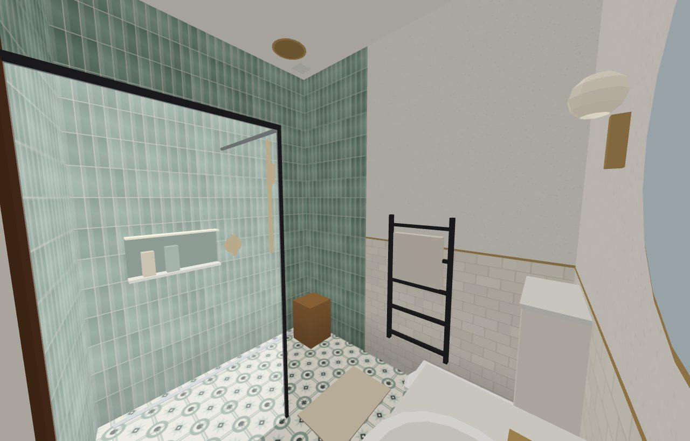
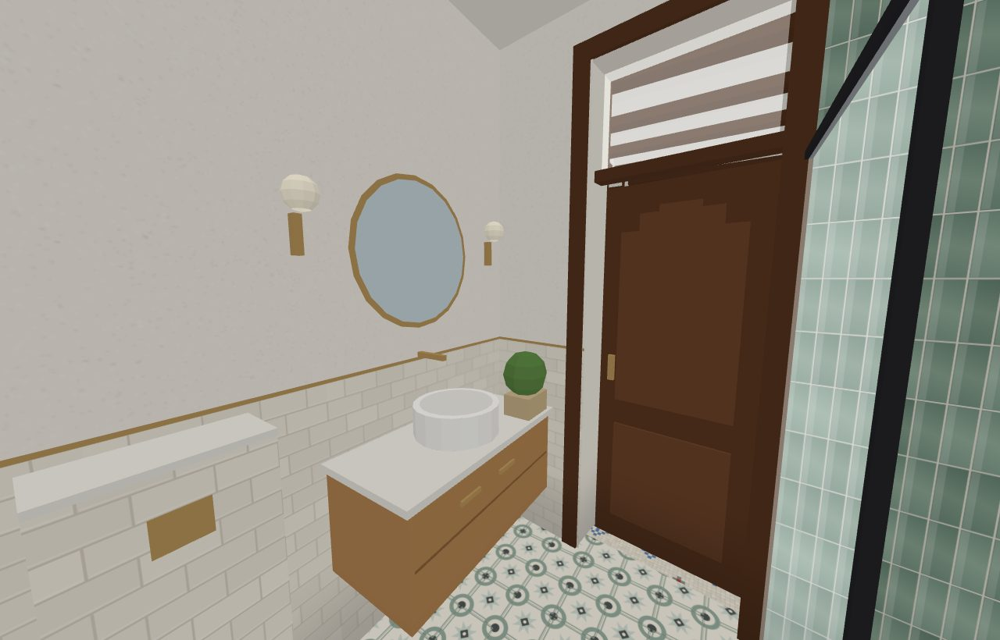
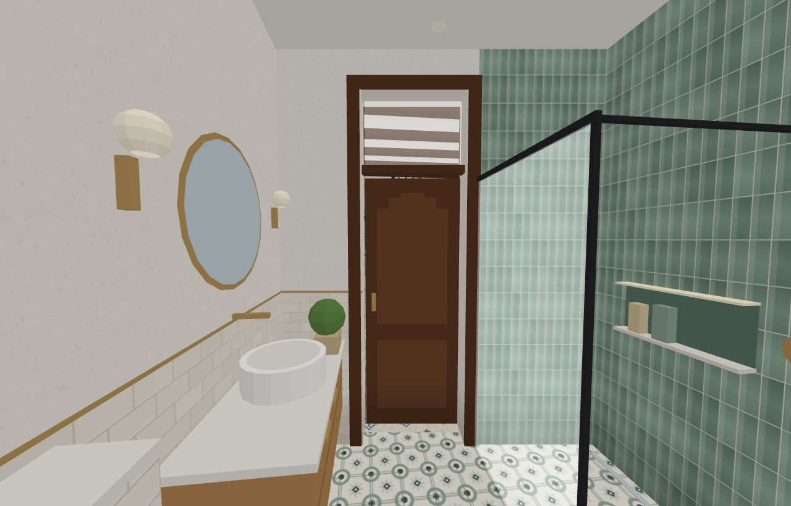
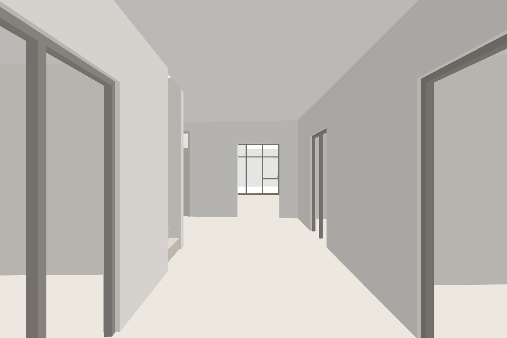
Cocina y anexo del patio
- Cocina: en L, con columna de frigorífico y horno, placa de inducción, campana, muebles altos y frontal de azulejo blanco. Suelo porcelánico claro y una ventana nueva al patio con reja.
- Anexo del patio: se mantiene y solo se repara. Tiene una sola entrada desde el porche, por un arco con puerta de aluminio blanco y vidrio mate. Dentro hay un lavadero pequeño con la pila sobre patas y sitio para la lavadora, y al fondo el baño, alicatado en crema con cenefa, con inodoro, cajonera, lavabo suspendido con espejo y ducha. Hacia el patio tiene una ventana honda con jambas de ladrillo visto.
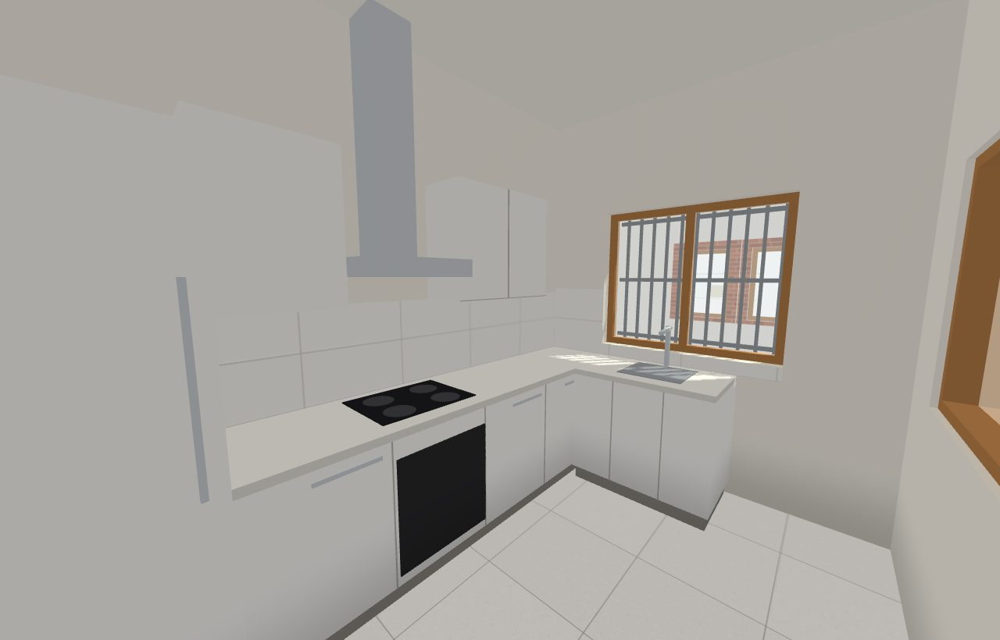
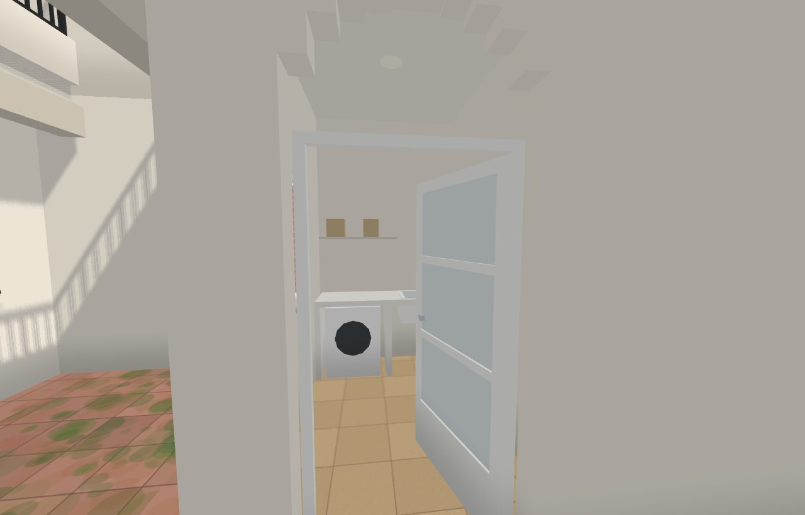
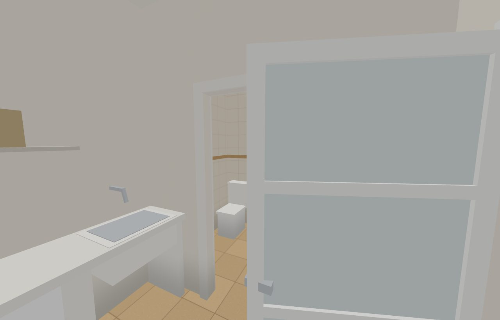
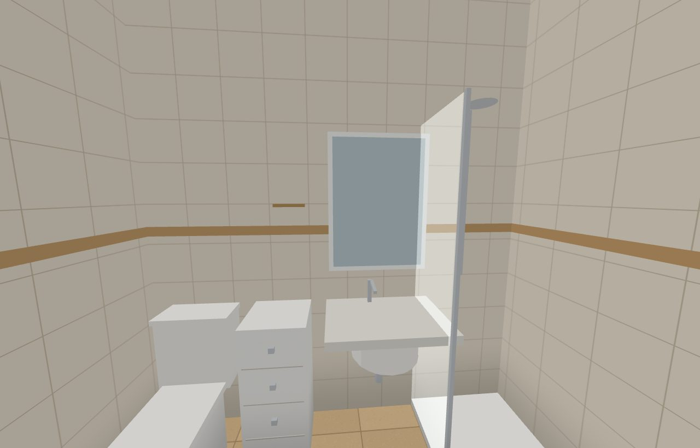
Envolvente: humedades, cubierta y fachadas
- Las señales de humedad más claras están en el patio, el lavadero y la fachada lateral. Muchas zonas interiores son obra nueva de una reforma anterior. Conviene medir la humedad antes de dejar el ladrillo a la vista.
- La cubierta se levanta, se impermeabiliza y se aísla, y se vuelven a colocar las mismas tejas árabes.
Cambra (fase posterior)
De momento se plantea como una sala diáfana bajo el tejado, con las vigas y los dos pilares de ladrillo a la vista y suelo laminado con base aislante. En la maqueta se puede cambiar entre la sala diáfana y esta propuesta de distribución:
- Dos dormitorios en la fachada de la calle, cada uno con su balcón: el A al norte (≈8,5 m²) y el B al sur (≈9,5 m²). El balcón central queda en la zona común.
- Despacho en la esquina sureste (≈6 m²), con la ventana que da a la terraza.
- Baño en la esquina noreste (≈4,5 m²), junto a la llegada de la escalera y encima del baño de abajo, para aprovechar las bajantes. Ducha de obra con zellige, inodoro suspendido bajo la ventana y mueble de roble.
- El resto, diáfano: la escalera, los dos pilares, el balcón central y la puerta de la terraza.
- Tabiques macizos hasta 2,60 m y vidrio fijo encima, hasta el tejado, para que la luz y las vigas se vean de lado a lado.
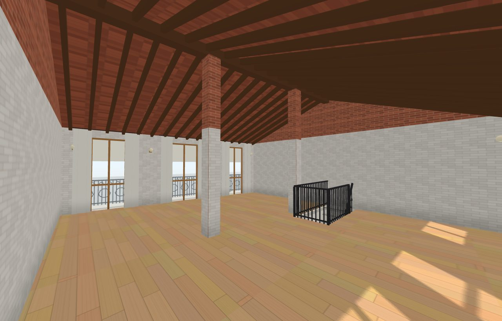
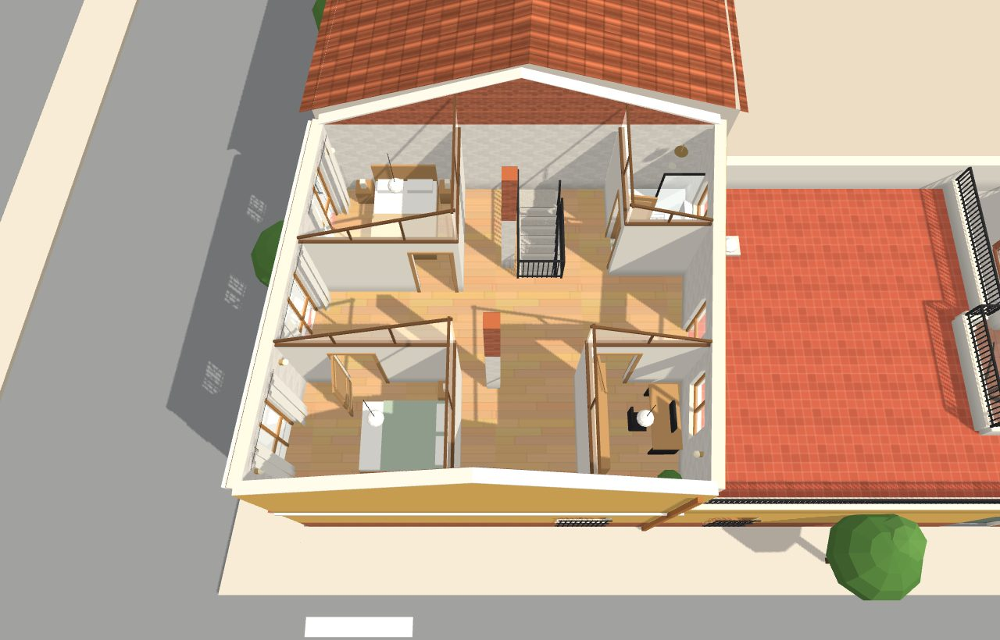
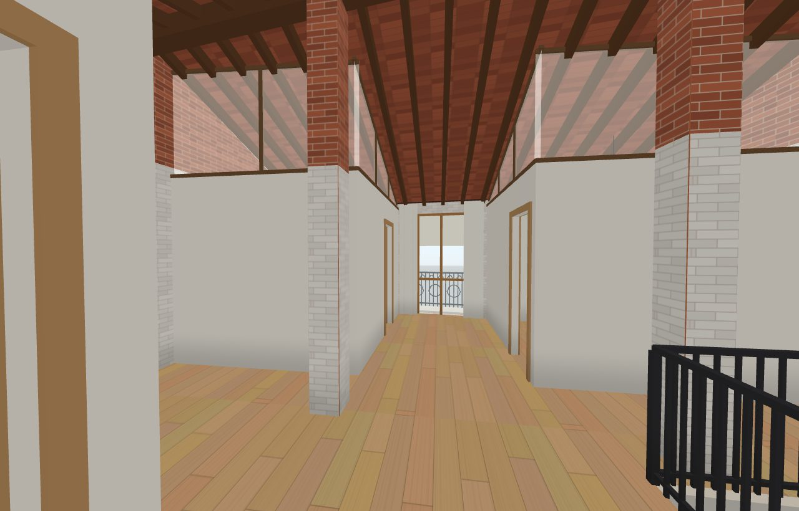
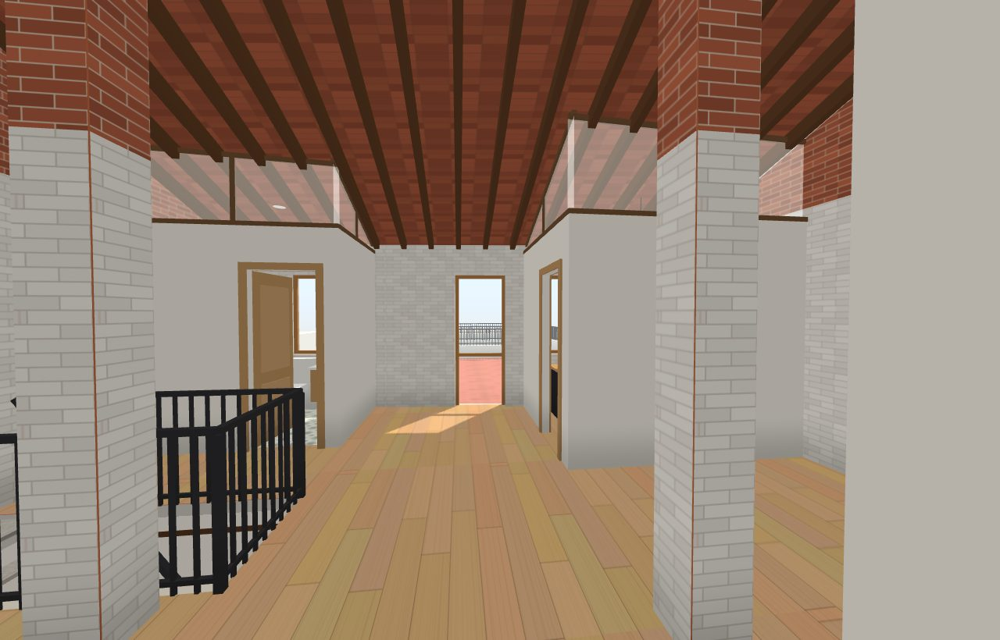
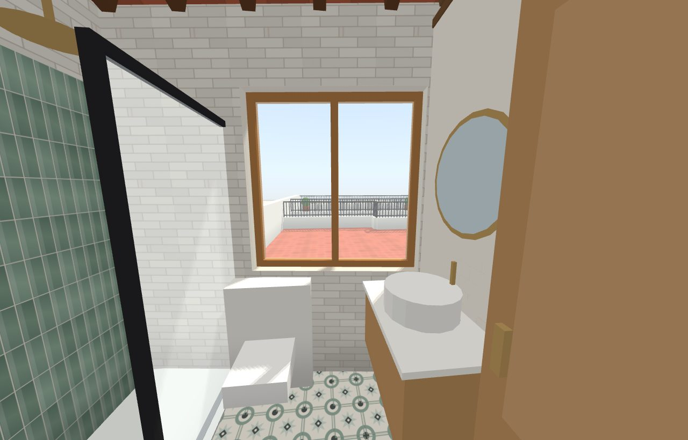
Pendiente de confirmar
- Posición norte–sur exacta del hueco abierto de la terraza (ahora estimada) y si la franja norte del hueco, junto a la medianera, también está abierta (así sale en el plano de la planta alta).
- Alturas del alero y de la cumbrera del tejado (en la maqueta, estimadas por las fotos).
- Alturas de la terraza y del salón, y si la parte antigua también tiene 2,98 m.
- Revisión de un técnico de la viga a lo largo del cerramiento y de su apoyo en los brazos existentes. El tabique actual no es de carga, pero la estructura del hueco sí hay que comprobarla.
- Licencia de obra mayor: aumenta la superficie cubierta.
- Medición de humedades antes de actuar en cada muro.
Todo es esquemático y orientativo; no es un proyecto técnico. Las cotas salen de la escala del plano de idealista.